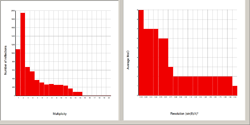
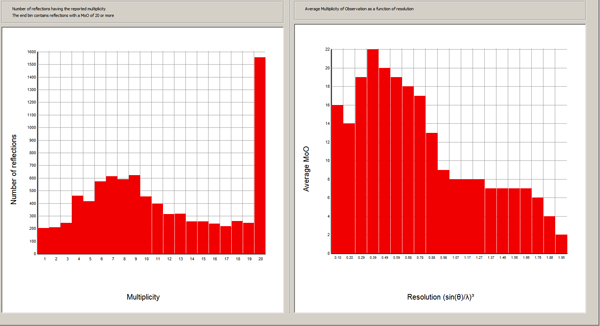

Multiplicity of Observations
The left hand image has a peak at a multiplicity of 7-9, and a very substantial
number of reflections having a multiplicity of 20 or more.
The intention of the
experiment was to observe most data at a MoO of about 8, but because of the
nature of area detectors, this means that a lot of the data will have a much
higher MoO. Since the standard deviation
of a reflection is given by standard deviation of sample)/ √(MoO)
these high MoO reflections will have an abnormally low standard deviation of
the mean, i.e. a low s.u. of the merged intensity.
The inset below is data from a data collection which was terminated early.
Because the predicted strategy was interrupted, most reflections were measured
with a low MoO, especially at high resolution.

|
 |